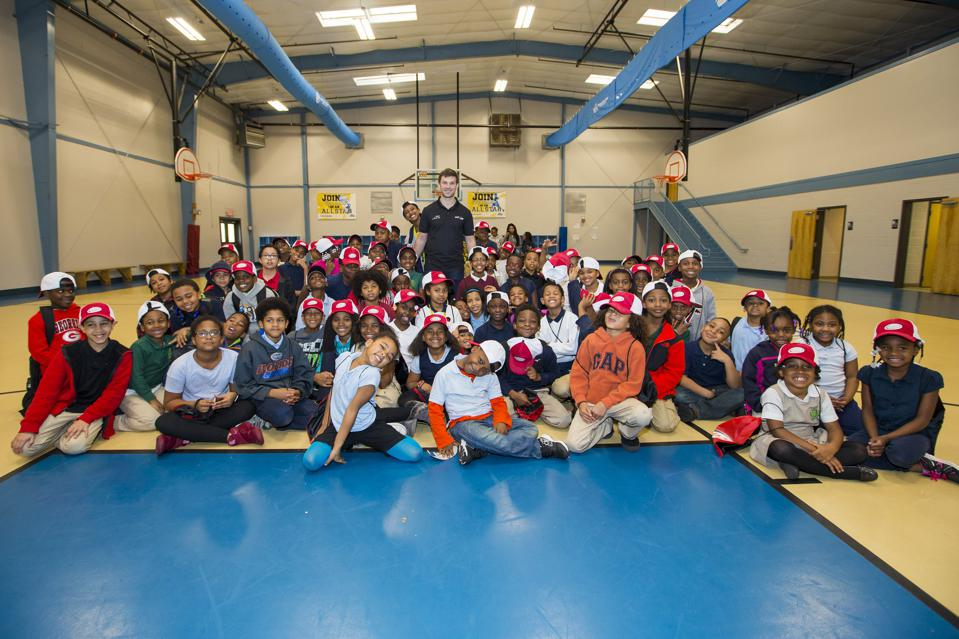

Built 30 boys and girls clubs of America

The Boys & Girls Clubs of America has become the Official Youth Community Partner of Nascar. The multiyear partnership was announced Sunday and will focus on three core areas — STEM education, career development and diversity, equity and inclusion (DE&I) initiatives. The Boys & Girls Clubs of America.
feeding the homeless for 15 years and counting
After the state relaxed local ordinances that make it easier for homeowners to build an accessory dwelling unit (ADU) or granny shack on their properties, applications skyrocketed. LA’s planning department estimates that ADUs make up one-fifth of all new housing permits.
In 2019, another batch of ADU bills passed the state legislature, clearing even more hurdles for property owners to add additional residential units. “The power should go to the homeowner, not the government, if they want to help with the housing crisis,” State Sen. Bob Wieckowski told Curbed. “We should let them chip in.”